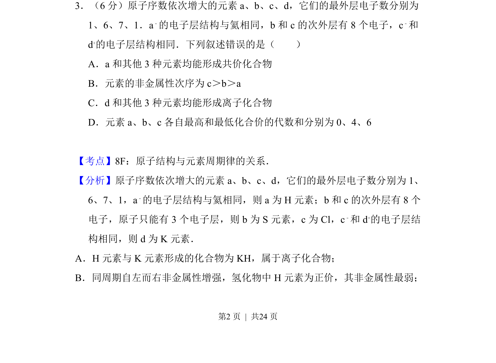
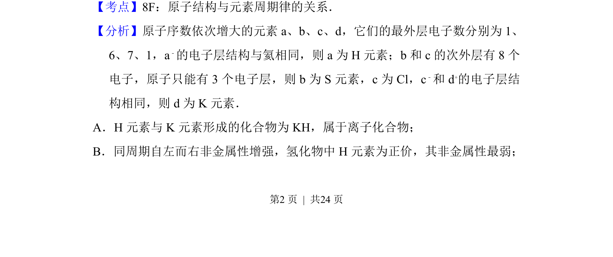
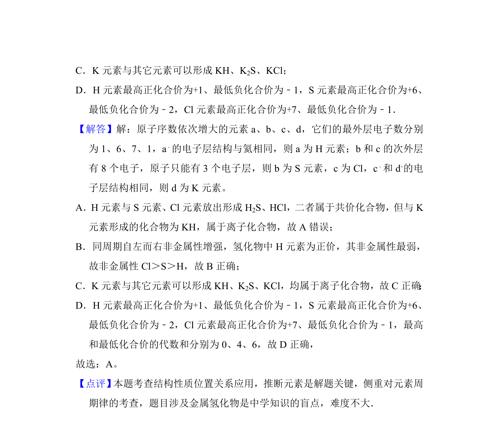

考点：原子结构与元素周期律 非金属性比较 共价化合物与离子化合物

推断元素H、S、Cl、K，考查原子结构、元素周期律及化学键类型判断


📄 原 PDF 第 2 页：
素材/真题/吉林/2008-2024·（吉林）化学高考真题/2015年高考化学试卷（新课标Ⅱ）（解析卷）.pdf
3．（6分）原子序数依次增大的元素a、b、c、d，它们的最外层电子数分别为 1、6、7、1．a﹣的电子层结构与氦相同，b和c的次外层有8个电子，c ﹣和 d+的电子层结构相同．下列叙述错误的是（ ） A．a和其他3种元素均能形成共价化合物 B．元素的非金属性次序为c＞b＞a C．d和其他3种元素均能形成离子化合物 D．元素a、b、c各自最高和最低化合价的代数和分别为0、4、6
【考点】8F：原子结构与元素周期律的关系．菁优网版权所有 【分析】原子序数依次增大的元素a、b、c、d，它们的最外层电子数分别为1、 6、7、1，a﹣的电子层结构与氦相同，则a为H元素；b和c的次外层有8个 电子，原子只能有3个电子层，则b为S元素，c为Cl，c ﹣和d +的电子层结 构相同，则d为K元素． A．H元素与K元素形成的化合物为KH，属于离子化合物； B．同周期自左而右非金属性增强，氢化物中H元素为正价，其非金属性最弱；